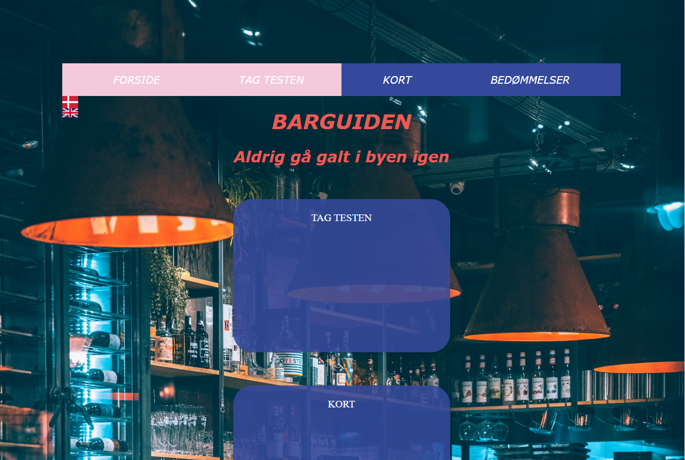

Tema 3 - Grundlæggende UX/UI
Tema beskrivelse
I denne opgave var der stor fokus på design- og udviklingsprocessen og testing af vores produkter, da det var første gang vi skulle prøve kræfter med hele processen. Vi blev præsenteret for Figma og Figjam for første gang. Med Figma blev vi endvidere præsenteret for forskellige designredskaber, så som userstories og four-step-sketch og til mit emnesite skulle jeg lave moodboards, styletile, wireframes og protoyper for første gang. Selve indholdet i opgaven var individuelt, sitet skulle bare have et reelt formål. Jeg valgte at lave en bar-guide til barerne i København.
Konklusion på tema
Som slut på dette projekt skulle jeg fremlægge min design- og udviklignsproces. I løbet af temaet havde jeg lavet test for at forbedre mit produkt og gøre det mest muligt brugervenligt. I min proces benyttede jeg mig af 5-sek test, tænkehøjt test og lighthouse test.